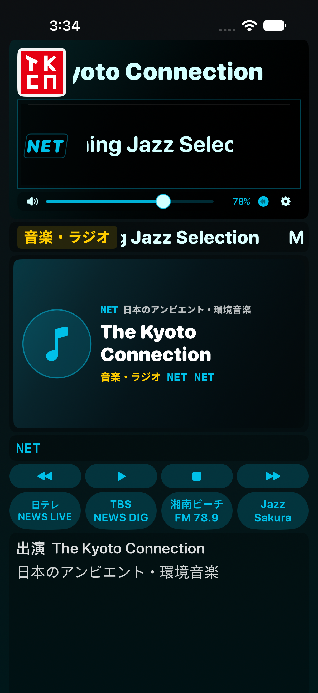

iOS 17.0 이상. SideStore에서 서명해 설치합니다. 기존 앱을 삭제하지 않고 같은 Apple 계정으로 업데이트하세요.
프로그램명 표시 · 최신 NET 41개 방송 · 공식 편성표/곡명/사진 · 전체화면 영상 · 재접속 보완. 스트리밍 음량 보정은 iOS 27 이상에서 지원합니다.

실제 iPhone 시뮬레이터 캡처입니다. 프로그램명은 검사용 예시이며, 긴 제목은 표시창 안에서 가로로 흐릅니다.
SHA-256f3dedb5f54fa3e7bc070e5b1649d651fca3cb5f157be48cc9e706b3f0e0f48fe
실제 iPhone 재생·설치는 별도 확인이 필요합니다.